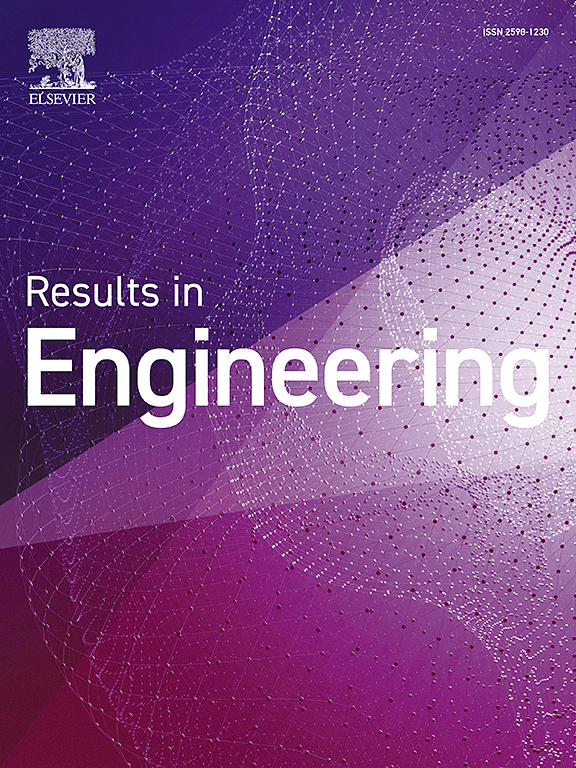
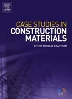
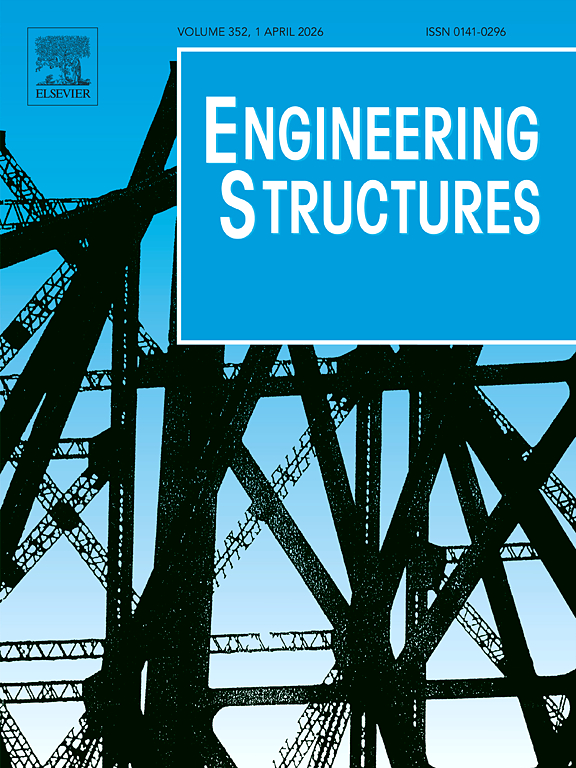
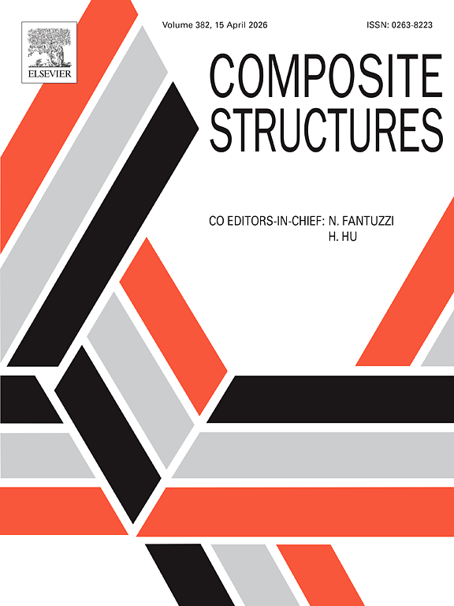
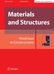
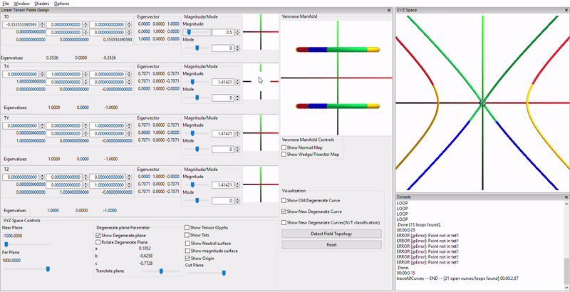

Woubishet Taffese, PhD
Center for Intelligent Infrastructure,
Missouri University of Science & Technology, Rolla
Missouri, United States
woubishet.taffese (at) mst (dot) edu
News
| 09.17.2024 | Paper titled "Benchmarking YOLOv8 for Optimal Crack Detection in Civil Infrastructure" is accepted for publication at 104th Transportation Research Board Annual Meeting, 2025. |
| 01.01.2024 | Joined as Postdoctoral Fellow at the Center for Intelligent Infrastructure in Missouri University of Science & Technology. |
| 11.22.2023 | Paper titled "Formation-Aware Planning and Navigation with Corridor Shortest Path Maps" is accepted for publication at CGF Journal. |
| 11.03.2023 | Sucessfully defended my thesis research on "Navigation Structures for Flows, Formations and Decision Making". |
| 10.12.2023 | US Patent titled "System and method for automatic floorplan generation" is now published. |
| 10.11.2023 | Paper titled "Computing and Analyzing Decision Boundaries from Shortest Path Maps" is accepted for publication at Computer & Graphics Journal. |
| 06.15.2023 | One of my collaborative work is now accepted as a full paper at Building Simulation 2023 proceedings. |
| 05.22.2023 | Joined Amazon Robotics as an Applied Scientist II Co-op starting Summer 2023. |
| 05.03.2023 | Paper titled "Automatic Digitization and Orientation of Scanned Mesh Data for Floor Plan and 3D Model Generation" is conditionally accepted at CGI 2023 proceedings. |
| 05.02.2023 | Paper titled "Spatially Distributed Lane Planning for Navigation in 3D Environments" is accepted for publication at CAVW Journal. |
| 04.01.2023 | Paper titled "Spatially Distributed Lane Planning for Navigation in 3D Environments" is conditionally accepted at CASA, 2023. |
| 09.10.2022 | Paper titled "Structure-Preserving Editing of Plates and Volumes for Laser Cutting" was accepted for publication at ACM SCF, 2022 |
| 04.25.2022 | Joined as an intern at Dolby Laboratories Inc. to work on topics related to 3D reconstuction for video |
| 04.29.2022 | Passed my PhD Thesis proposal and I am a PhD candidate now |
| 04.15.2022 | Presented research on Navigation Structures for Flows, Formations and Decision Boundaries at UC Merced EECS Seminar 2022 |
| 02.03.2022 | Joined as Visiting Researcher at Palo Alto Research Center (PARC, A Xerox Company) |
| 05.24.2021 | Joined as Research Intern at Palo Alto Research Center (PARC, A Xerox Company) for Summer 2021 |
| 10.16.2020 | Paper titled "Plane-Based Local Behaviors for Multi-Agent 3D Simulations with Position-Based Dynamics" was conditionally accepted at IEEE AIVR, 2020 |
| 05.15.2020 | Joined as Visiting PhD Researcher under the supervision of Professor Patrick Baudisch at Hasso Plattner Institute, Potsdam, Germany |
| 04.24.2020 | Poster Paper titled "Data Driven Multihazard Risk Visualization" accepted for EuroVis 2020 |
| 03.29.2020 | Poster Paper accepted for ACM Symposium on Interactive 3D Graphics and Games 2020 (I3D), San Francisco |
| 03.26.2020 | Received Spring 2020 EECS Bobcat Travel Fellowship Award |
| 03.07.2020 | Poster Paper titled "Integrating Local Collision Avoidance with Shortest Path Maps" accepted for Eurographics 2020 |
| 08.02.2019 | Accepted as Student Volunteer at ACM SIGGRAPH ASIA 2019, November 16th-November 21st, Brisbane, Australia |
| 05.13.2019 | Received Travel Award for NSF funded SOCG, 2019, Portland, Oregon, USA |
| 04.29.2019 | Accepted as Student Volunteer at ACM SIGGRAPH 2019,July 28th- August 1st, Los Angeles, USA |
| 04.01.2019 | Elected as Secretary of the Merced Indian Graduate Student Association(MIGSA) at University of California, Merced |
| 03.19.2019 | Received Summer 2019 EECS Bobcat Fellowship |
| 03.07.2019 | Accepted as Student Volunteer at Eurographics 2019,May 6th-10th, Genoa, Italy |
| 03.01.2019 | Received Spring 2019 EECS Bobcat Travel Fellowship Award |
| 08.15.2018 | Joined PhD Program in EECS at University of California, Merced |
| 05.08.2017 | Joined as Senior Graphics Programmer at Passur Aerospace Inc., Orlando, Florida |
| 03.13.2017 | Paper titled "Force-directed layout of origin-destination flow maps" accepted for IJGIS |
| 03.08.2017 | Defended M.S thesis on "Interactive Design and Transition Point Analysis of 3D Linear Symmetric Tensor Fields" |
| 02.28.2017 | Paper titled "Maximum Number of Transition Points in 3D Linear Symmetric Tensor Fields" accepted for TOPOVIS 2017 |
| 08.11.2017 | Paper titled "Design principles for origin-destination flow maps" accepted for journal of CGIS |
| 12.05.2016 | Paper titled "Feature surfaces in symmetric tensor fields based on eigenvalue manifold" invited for presentation at SIGGRAPH Asia 2016 |
| 10.27.2016 | Paper titled "Feature surfaces in symmetric tensor fields based on eigenvalue manifold" invited for presentation at IEEEVIS WEEK 2016 |
| 04.04.2016 | Joined as an Intern in Mathematica Algorithm R&D team, Wolfram Research Inc., Champaign, Illinois |
| 03.01.2016 | Paper titled "Feature surfaces in symmetric tensor fields based on eigenvalue manifold" accepted at IEEE TVCG |
I am currently a Postdoctoral Fellow at the Center for Intelligent Infrastructure located at Missouri University of Science & Technology. My focus is on improving bridge inspection capabilities through the use of robotics,
computer vision, AI, and digital twin techniques.
I hold a PhD degree in Electrical Engineering and Computer Science from the University of California, Merced. During my PhD, I worked on AI path planning in 2D and 3D spaces for multi-agent navigation and visualization
of navigation strategies for diverse scenarios, under the supervision of Professor Marcelo Kallmann.
My collaborative efforts, both in industry and academia, have resulted in impactful research spanning geometry modeling for HVAC systems, laser-cut modeling, scene reconstruction, novel view synthesis, and path planning
in large warehouse settings with a focus on uncertain obstacles. Before joining UC Merced, I worked as a Senior Graphics Programmer at Passur Aerospace Inc. I hold a master's degree in Computer Science from the School of
Electrical Engineering and Computer Science at Oregon State University, where I was advised by
Professor Eugene Zhang. The title of my master's thesis was "Interactive Design and Transition Point Analysis of 3D Linear Symmetric Tensor Fields.".
My areas of interest are Computer Graphics, Animation, Robotics, Geometry Processing, Computational Geometry, Scientific Visualization, Artificial Intelligence and Machine learning Algorithms.
Research Collaborators: Professor Tomer Weiss, New Jersey Institute of Technology, USA
I am always looking for interesting research opportunities or collaborations, contact me if you have an interesting position or collaboration ideas.
Academics
|
Doctor of Philosophy in ICT Applied AI/ML, |
|
|
Aalto University, Espoo, Finland |
|
|
Master of Science in Civil Engineering, |
|
|
|
Master of Engineering in Big Data Analytics, |

Selected Publications
|  |
|
|
|
|
|  |
|
|  |
|
 |
|
|  |
|
|
|
|
|  |
|
|
|
|
 |
|
|
|
|
|
|
 |
|
|
|
|
|
|
|
|
|
|
|
|
Patent
System and Method for Automatic Floorplan Generation
Inventor: Eric A. Bier & Ritesh Sharma
US Patent App. 18/297,506
Interactive Design and Transition Point Analysis of 3D Linear Symmetric Tensor Fields
3D symmetric tensor fields have a wide range of applications, such as in solid and fluid
mechanics, medical imaging, meteorology, molecular dynamics, geophysics and computer
graphics. There has been much research carried out in this field, yet our knowledge of the
tensor field is still at its initial stage to completely understand the behavior of 3D linear
tensor fields. To understand the behavior and to design such applications, topology
plays an important role. The degenerate points are the most studied topological feature
of symmetric tensor fields. Though several attempts have been made to understand
such features, still none of them seems to be complete. In this work, we provide an
interactive interface to study such features. We also study the maximum number of
transition points in a linear tensor field and classification of wedge and trisector along
the degenerate curves. Finally, we provide an insight over the upper and lower bound
on the number of transition points in a linear tensor field. This work is also a part of my MS thesis.
[Thesis]

Degenerate patterns |

Interactive User Interface |
RendermanLink: Interface between Wolfram's Mathematica and Pixar's Renderman
In this project, I built a software package in C to connect Wolfram's Mathematica with Pixar's Renderman.The main aim of this project is to utilize the rendering power of Renderman Engine to produce a high resolution images without being concerned with the syntax used for Renderman API ie., the user with just a knowledge of Wolfram Language can generate high resolution images in no time. This work was part of my internship at Wolfram Research Inc. in their Mathematica Algorithm R&D department.

Script in Mathematica Editor |

Result |
Unsignalized T-intersection Simulation
In this project, I worked under the supervision of Professor Gopal R. Patil) created a simulation to showcase the actual movement of vehicle on an unsignalized T-Intersection using Cellular Automata technique. This simulaton serves the purpose of training student (pursuing transportation engineering) for an actual survey or data collection.
Class Project
Pool Game Animation [Code] |
Smoke Visualization |

Realtime crowd simulation |

3D Voronoi Diagram |
Predictive Modeling of Flood Susceptibility, Phase 1 |

Bunny sketch using Curvature Tensor |

Bird Call Identification using Content Based Image Retrieval(Report) |
More projects related to Geometry Processing and Computer Graphics(See more)
Research Experience
|
|
May 2023 - Dec 2023 |
|
|
May 2022 - Aug 2022 |
|
Visiting Researcher(Feb 2022 - May 2022) |
|
|
|
May 2019 - Dec 2020 |
|
May 2020 - August 2020 |
|
|
March 2014 - Dec 2016 |
|
|
October 2010 - December 2013 |

Professional Experience
|
May 2017 - August 2018 |
|
|
|
April 2016 - August 2016 |
Teaching Experience
August 2018 - May 2023
Teaching Assistant,
School of Electrical Engineering and Computer Sciences
University of California, Merced, California
Courses: Introduction to Computing I: Java (CSE 020), Advanced Programming (CSE 024), Data Structures (CSE 030), Algorithm Design and Analysis (CSE 100), Introduction to Object Oriented Programming (CSE 165) ,Computer Graphics (CSE 170)
January 2014 - March 2016
Graduate Teaching Assistant,
School of Electrical Engineering and Computer Science
Oregon State University, Corvallis, Oregon
Courses:Analysis of Algorithm(CS 325), Introduction to Databases(CS 340),Opertaing Systems I(CS 344) and Translators(CS 480)
August 2021
Teaching Assistant,
Summer Geometry Institute 2021
Organized by Massachusetts Institute of Technology
Awards
UC Merced Spring 2023 EECS USAP Travel Award
UC Merced GRAD EXCEL Peer Mentorship Award 2020-2021 & 2021-2022
UC Merced Spring 2020 EECS Bobcat Travel Award
Travel Fellowship for NSF funded SOCG 2019, Portland, Oregon
UC Merced Summer 2019 EECS Bobcat Fellowship
UC Merced Spring 2019 EECS Bobcat Travel Award
Graduate Assistantship (Full tuition & Stipend) at University of California Merced (2018-2023)
Graduate Assistantship (Full tuition & Stipend) at Oregon State University (2014-2017)
Honorary Citizenship of Corvallis, Oregon for contributions and achievements at Oregon State University by the mayor of city of Corvallis, Oregon, United States
Research Talks
- Navigation Structures for Flows, Formations and Decision boundaries at EECS Spring 2022 Seminar Series, University of California Merced, CA, USA
Journal/Proceedings Reviewer
Robotics: Science and Systems 2020 & 2024
IEEE TVCG 2023 & 2024
IEEE VIS 2021, 2022 & 2023
EuroVIS 2022, 2023 & 2024
IEEE PACIFIC VIS 2022 & 2024
ACM MIG 2019, 2020 & 2021
CASA 2019, 2020, & 2023
ICAPS 2019
Miscellaneous
Member of DEI and Accessibility subgroup for SIGGRAPH Research Career Development Committee
Peer mentored nine first year PhD students under UC Merced GRAD-EXCEL Peer Mentor Program for the academic year 2020-2021 & 2021-2022
Served as the Secretary of the Merced Indian Graduate Student Association (MIGSA) at University of California Merced for the academic year 2019-2020
Served as Student Volunteer at ACM SIGGRAPH 2019,July 28th- August 1st, Los Angeles, USA
Mentored a senior undergraduate student under REU (Research Experience for Undergraduate) Program during Summer 2015, funded by NSF.
Poster Presentation on Mode Surface Extraction Using A-Patches at Engineering Research Expo held at Oregon Convention Center, Portland, Oregon, Mar 4, 2015.
Active member of technical and scientific committee in the International conference for Transportation Planning and Methodologies for Developing Countries(TPMDC), 2012 at IIT Bombay.
Active member of organising committee in National Conference, InTranSe 2011, Conducted by CDAC, Trivandrum at IIT Bombay.
Awarded a certificate of merit by Howrah Municipal Corporation for securing highest marks in Secondary School Examination in the entire ward(a small divsion of a city).
Lead the school quiz team upto top 8 schools in the QUEST, a Science Quiz competition conducted by Birla Industrial & Technological Museum, Kolkata.
Won 2nd position in the Kolkata chapter of All Bengal SPELLinc Competition, 2003 and led team to Grand Finale of All Bengal SPELLinc Competition, 2003.
Won 2nd position in the Quiz Contests conducted by Society of Human Growth, Kolkata and Salkia Bharat Sangha, Howrah in the year, 2002.
Won 3rd position in the Drawing competition conducted by Kolkata Traffic Police during Road Safety Week, 2001.
Wrote poems for the school magazine and the poem named A Land called India was published in the Hindustan Times(one of the leading newspaper in India).
Participated in two day workshop on "ASTRONOMY FOR ENGINEERS" conducted by Department of Engineering Sciences and Humanities, Siliguri Institute of Technology.